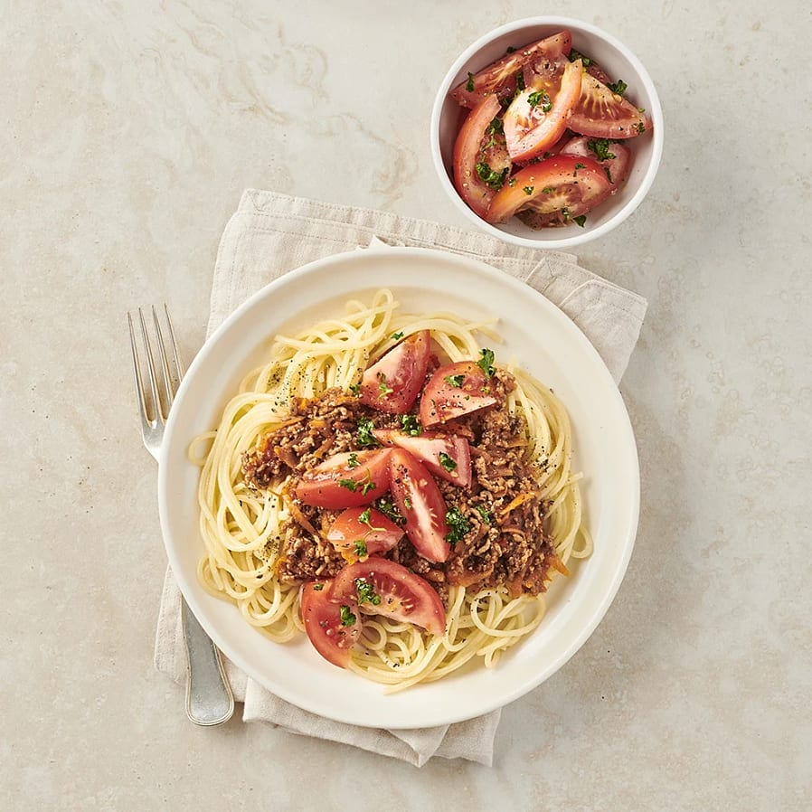

Tillbaka hem
Spaghetti med köttfärssås
Spaghetti är en klassisk italiensk partarätt som är lång, tunn och rund till formen. Denna recept kommer visa er den fulla potentialen av spaghetti

Ingredienser
- 2 morötter
- ca 500g nötfärs
- 1 msk olivolja
- 1 vitlöksklyfta
- 2 tsk timjan
- 500g krossade tomater
- 1 msk balsamvinäger
- 1 köttbuljongtärning
- Salt
- Peppar
- 4 port spaghetti
- 1/2 kruka persilja
- 3 tomater
- 1 tsk olivolja
- 1 tsk rödvinsvinäger